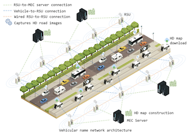

Short Bio
Dr. Han is a Senior Principal Scientist at Toyota Motor North America, where he has been researching personalized intelligent vehicles by utilizing an intelligent and connected Digital Twin supported by Edge/Cloud AI framework. Prior to joining Toyota Motor North America, he was a Research Scientist at Intel Labs in adaptive and context-aware computing to improve energy efficiency in laptops and other mobile platforms. Dr. Han has 60+ peer-reviewed publications and 70+ US patent applications. In the last two years, he won the Vincent Bendix Automotive Electronics Engineering Award from SAE International and the Best Application Award at an IEEE Conference. Prior to that, he won a 2015 Best Paper and four technical achievement awards at Intel, including the Intel Achievement Award, which is the Highest Technical Award at Intel. He is a senior member of IEEE and a member of ACM and SAE.
Recent News
- July 2023: Earned Artificial Intelligence Graduate Certificate from Stanford University
- July 2023: Three new papers accepted at 2023 IEEE International Conference on Intelligent Transportation Systems (ITSC)
- July 2023: New paper accepted at IEEE/CIC International Conference on Communications in China (ICCC) on "Real-time search-driven content delivery in vehicular networks for AR/VR-enabled autonomous vehicles"
- June 2023: New paper accepted at The 20th IEEE International Conference on Mobile Ad-Hoc and Smart Systems (MASS 2023) on "Visualization of Mobility Digital Twin: Framework Design, Case Study, and Future Challenges"
- June 2023: New paper accepted at 2023 IEEE International Conference on Systems, Man, and Cybernetics (SMC) on "Real-Time Learning of Driving Gap Preference for Personalized Adaptive Cruise Control"
- May 2023: Served as a chair of resource allocation session at 2023 IEEE International Conference on Communications (ICC) and delivered a talk at Next-Generation Networking and Internet Symposium
- May 2023: New paper accepted at IEEE Transactions on Intelligent Transportation Systems (T-ITS) on "DSORL: Data source optimization with reinforcement learning scheme for vehicular named data networks"
- April 2023: Filed three patent applications and reached 70+ filed/issued patents
- April 2023: New paper accepted at 2023 IEEE ICASSP Workshop on Timely and Private Machine Learning over Networks on "Confidence-based federated distillation for vision-based lane-centering"
- April 2023: Served as a panelist at IEEE Intelligent Transportation Systems Society (ITSS) webniar on Cooperative Perception
- March 2023: Two new papers accepted at 2023 IEEE Intelligent Vehicles Symposium (IV) on "Driver monitoring-based lane-change prediction: A personalized federated learning framework" and "Exploring vehicular interaction from trajectories based on granger causality"
- March 2023: Appointed as a member of Standing Committee on Artificial Intelligence and Advanced Computing Applications (AED50) at TRB
- March 2023: New paper accepted at IEEE Internet of Things Journal (IoT-J) on "Driver Digital Twin for Online Prediction of Personalized Lane Change Behavior"
- March 2023: New paper accepted at IEEE Vehicular Technology Magazine (VTM) on "Metamobility: Connecting future mobility with metaverse"
- March 2023: A book chapter published at Towards Human-Vehicle Harmonization on "Driver Behavior-Aware Cooperative Ramp Merging for Intelligent Vehicles"
- March 2023: Appointed as a publication co-chair for 2023 IEEE International Conference on Systems, Man, and Cybernetics (SMC)
- March 2023: Appointed as a workshop co-chair for The First ACM/IEEE Worshop on Digital Twins with Edge Computing colocated with The Eight ACM/IEEE Symposimum on Edge Computing
- January 2023: Three papers are accepted at IEEE International Conference on Communications (ICC)
- December 2022: Appointed as an associate editor for SAE International Journal of Connected and Automated Vehicles (JCAV)
- Decemter 2022: Serve as technical program committee of ACM/IEEE International Conference on Cyber-Physical Systems (ICCPS)
- October 2022: A poster accepted at 2022 ACM/IEEE Symposium on Edge Computing (SEC) on "Poster: Enabling high-fidelity and real-time mobility digital twin with edge computing"
- September 2022: Initiated research collaboration with Purdue University
- September 2022: Initiated research collaboration with Georgia State University
- August 2022: Initiated research collaboration with the University of Nebraska-Lincoln
- August 2022: New paper accepted at ACM Transactions on Cyber-Physical Systems (T-CPS) on "Planning for automated vehicles with human trust"
- June 2022: Two new papers accepted at 2022 IEEE International Conference on Intelligent Transportation Systems (ITSC) on "GapFormer: Fast Autoregressive Transformers meet RNNs for Personalized Adaptive Cruise Control" and "A Study on Learning and Simulating Personalized Car-Following Driving Style"
- May 2022: New paper accepted at IEEE Transactions on Intelligent Transportation Systems (T-ITS) on "Gaussian Process-Based Personalized Adaptive Cruise Control"
- Feb 2022: New paper accepted at IEEE Internet of Things Journal (IoT-J) on "Mobility Digital Twin: Concept, Architecture, Case Study, and Future Challenges"
- January 2022: Two new papers accepted at 2022 IEEE International Conference on Robotics and Automation (ICRA) on "Personalized Car Following for Autonomous Driving with Inverse Reinforcement Learning" and "Online Prediction of Lane Change with a Hierarchical Learning-Based Approach"
Recent Research
Academia Research Partners
| |
Publications
Journal Articles (Peer Reviewed)
|
DSORL: Data source optimization with reinforcement learning scheme for vehicular named data networks
Daniel Doe, Dawei Chen, Kyungtae Han, Haoxin Wang, Jiang Xie, and Zhu Han IEEE Transactions on Intelligent Transportation Systems (T-ITS), 2023 (Accepted) |

|
|
| Driver Digital Twin for Online Prediction of Personalized Lane Change Behavior
Xishun Liao, Xuanpeng Zhao, Ziran Wang, Zhouqiao Zhao, Kyungtae Han, Rohit Gupta, Matthew J. Barth, and Guoyuan Wu IEEE Internet of Things Journal (IoT-J), 2023 (Accepted) Link |
||
|
Metamobility: Connecting future mobility with metaverse
Haoxin Wang, Ziran Wang, Dawei Chen, Qiang Liu, Hongyu Ke, and Kyungtae Han IEEE Vehicular Technology Magazine (VTM), 2023 (Accepted) Link |
||
| Planning for automated vehicles with human trust
Shili Sheng, Erfan Pakdamania, Kyungtae Han, Ziran Wang, John Lenneman, David Parker, and Lu Feng ACM Transactions on Cyber-Physical Systems (T-CPS), 6(4), Nov. 2022 Link | PDF |
||
| Mobility digital twin: Concept, architecture, case study, and future challenges
Ziran Wang, Rohit Gupta, Kyungtae Han, Akila Ganlath, Nejib Ammar, and Prashant Tiwari IEEE Internet of Things Journal (IoT-J), 9(18):17452–17467, 2022 Link | PDF |
||
| Co-simulation platform for modeling and evaluating connected and automated vehicles in mixed traffic
Xuanpeng Zhao, Xishun Liao, Guoyuan Wu, Matthew J. Barth, Ziran Wang, Kyungtae Han, and Prashant Tiwari SAE International Journal of Connected and Automated Vehicles (J-CAV), 5(4):313-326, 2022 Link | PDF |
||
| Gaussian process-based personalized adaptive cruise control
Yanbing Wang, Ziran Wang, Kyungtae Han, Prashant Tiwari, and Daniel Work IEEE Transactions on Intelligent Transportation Systems (T-ITS), 23(11):21178–21189, 2022 Link | PDF |
||
| Vision-cloud data fusion for ADAS: A lane change prediction case study
Yongkang Liu, Ziran Wang, Kyungtae Han, Zhenyu Shou, Prashant Tiwari, and John Hansen IEEE Transactions on Intelligent Vehicles (T-IV), 7(2):210–220, June 2022 Link | PDF |
||
| Digital twin-assisted cooperative driving at non-signalized intersections
Ziran Wang, Kyungtae Han, and Prashant Tiwari IEEE Transactions on Intelligent Vehicles (T-IV), 7(2):198–209, June 2022 Link | PDF |
||
| Game theory-based ramp merging for mixed traffic with unity-sumo co-simulation
Xishun Liao, Ziran Wang, Xuanpeng Zhao, Kyungtae Han, Prashant Tiwari, Matthew J. Barth, and Guoyuan Wu IEEE Transactions on Systems, Man, and Cybernetics: Systems (T-SMCS), pages 5746 - 5757, 2022 Link | PDF |
||
| Cooperative ramp merging design and field implementation: A digital twin approach based on vehicle-to-cloud communication
Xishun Liao, Ziran Wang, Xuanpeng Zhao, Kyungtae Han, Prashant Tiwari, Matthew J. Barth, and Guoyuan Wu IEEE Transactions on Intelligent Transportation Systems (T-ITS), pages 1-11, 2021 Link | PDF |
||
| Driver behavior modeling using game engine and real vehicle: A learning-based approach
Ziran Wang, Xishun Liao, Chao Wang, David Oswald, Guoyuan Wu, Kanok Boriboonsomsin, Matthew J. Barth, Kyungtae Han, BaekGyu Kim, and Prashant Tiwari IEEE Transactions on Intelligent Vehicles (T-IV), 5(4):738–749, 2020 Link | PDF |
||
| Cooperative ramp merging system: Agent-based modeling and simulation using game engine
Ziran Wang, Xishun Liao, Chao Wang, David Oswald, Guoyuan Wu, Kanok Boriboonsomsin, Matthew J. Barth, Kyungtae Han, BaekGyu Kim, and Prashant Tiwari SAE International Journal of Connected and Automated Vehicles (J-CAV), May 2019 (Best Paper Award) Link | PDF |
||
| Optimum wordlength search using sensitivity information
Kyungtae Han and Brian L. Evans EURASIP Journal on Advances in Signal Processing (J-ASP), 2006(1):092849, Dec 2006 Link | PDF |
Conference Proceedings (Peer Reviewed)
| CEMFormer: Learning to Predict Driver Intentions from In-Cabin and External Cameras via Spatial-Temporal Transformers
Yunsheng Ma, Wenqian Ye, Xu Cao, Amr Abdelraouf, Kyungtae Han, Rohit Gupta, and Ziran Wang IEEE International Conference on Intelligent Transportation Systems (ITSC), 2023 (Accepted) Reviews |
|
| Interaction-Aware Personalized Vehicle Trajectory Prediction Using Temporal Graph Neural Networks
Amr Abdelraouf, Rohit Gupta, and Kyungtae Han IEEE International Conference on Intelligent Transportation Systems (ITSC), 2023 (Accepted) Reviews |
|
| Inverse Reinforcement Learning and Gaussian Process Regression-based Real-time Framework for Personalized Adaptive Cruise Control
Zhouqiao Zhao, Xishun Liao, Amr Abdelraouf, Kyungtae Han, Rohit Gupta, Matthew Barth, and Guoyuan Wu IEEE International Conference on Intelligent Transportation Systems (ITSC), 2023 (Accepted) Reviews |
|
|
Real-time search-driven content delivery in vehicular networks for AR/VR-enabled autonomous vehicles
Daniel Doe, Dawei Chen, Kyungtae Han, Yanpeng Dai, Linda Xie, and Zhu Han IEEE/CIC International Conference on Communications in China (ICCC), 2023 (Accepted) Reviews |
|
|
Visualization of mobility digital twin: Framework design, case study, and future challenges
Yueyang Liu, Xiaolong Tu, Dawei Chen, Kyungtae Han, Onur Altinas, and Haoxin Wang IEEE International Conference on Mobile Ad Hoc and Smart Systems (MASS), 2023 (Accepted) Reviews |
|
|
Real-Time Learning of Driving Gap Preference for Personalized Adaptive Cruise Control
Zhouqiao Zhao, Xishun Liao, Amr Abdelraouf, Kyungtae Han, Rohit Gupta, Guoyuan Wu, and Matthew Barth IEEE International Conference on Systems, Man, and Cybernetics (SMC), 2023 (Accepted) Reviews |
|
|
M2DAR: Multi-view multi-scale driver action recognition with vision transformer
Yunsheng Ma, Liangqi Yuan, Amr Abdelraouf, Kyungtae Han, Rohit Gupta, Zihao Li, and Ziran Wang IEEE/CVF Conference on Computer Vision and Pattern Recognition (CVPR) Workshops, pages 5286–5293, June 2023 |
|
|
Driver monitoring-based lane-change prediction: A personalized federated learning framework
Runjia Du, Kyungtae Han, Rohit Gupta, Sikai Chen, Samuel Labi, and Ziran Wan Intelligent Vehicles Symposium (IV), June 2023 Reviews |
|
|
Exploring vehicular interaction from trajectories based on granger causality
Xishun Liao, Guoyuan Wu, Matthew J. Barth, Rohit Gupta, and Kyungtae Han Intelligent Vehicles Symposium (IV), June 2023 Reviews |
|
|
Confidence-based federated distillation for vision-base lane-centering
Yitao Chen, Dawei Chen, Haoxin Wang, Kyungtae Han, and Ming Zhao IEEE IEEE International Conference on Acoustics, Speech, Signal Processing (ICASSP) Workshop, June 2023 Reviews | PDF |
|
|
EPAM: A Predictive Energy Model for Mobile AI
Anik Mallik, Haoxin Wang, Linda Xie, Dawei Chen, and Kyungtae Han IEEE International Conference on Communications (ICC), June 2023 (Accepted) Reviews | PDF |
|
|
High definition map data optimization for autonomous driving in vehicular named data networks
Daniel Doe, Dawei Chen, Haoxin Wang, Kyungtae Han, Linda Xie, and Zhu Han IEEE International Conference on Communications (ICC), June 2023 Reviews | PDF |
|
|
COMAP: Proactive provision for crowdsourcing map in automotive edge computing
Yongjie Xue, Yuru Zhang, Qiang Liu, Dawei Chen, and Kyungtae Han IEEE International Conference on Communications (ICC), June 2023 Reviews | PDF |
|
|
Adaptive delivery for high definition map using a multi-arm bandit approach
Yitao Chen, Dawei Chen, Haoxin Wang, Kyungtae Han, and Ming Zhao Dawei Chen, Haoxin Wang, and Kyungtae Han Wireless and Optical Communications Conference (WOCC), May 2023 Reviews | PDF |
|
|
Driver Digital Twin for Online Prediction of Personalized Lane Change Behavior and Field Implementation
Xuanpeng Zhao, Ziran Wang, Zhouqiao Zhao, Kyungtae Han, Rohit Gupta, Matthew J Barth, and Guoyuan Wu Transportation Research Board (TRB) 2023 Annual Meeting, Jan. 2023 Reviews |
|
| Poster: Enabling High-Fidelity and Real-Time Mobility Digital
Twin with Edge Computing
Yueyang Liu, Haoxin Wang, Zhipeng Cai, Dawei Chen, and Kyungtae Han 2022 IEEE/ACM 7th Symposium on Edge Computing (SEC), Dec. 2022 Reviews | Link |
|
| Gapformer: Fast autoregressive transformers meet RNNs for personalized adaptive cruise control
Noveen Sachdeva, Ziran Wang, Kyungtae Han, Rohit Gupta, and Julian McAuley IEEE International Conference on Intelligent Transportation Systems (ITSC), Oct. 2022 Reviews | PDF |
|
| A study on learning and simulating personalized car-following driving style
Shili Sheng, Erfan Pakdamanian, Kyungtae Han, Ziran Wang, and Lu Feng IEEE International Conference on Intelligent Transportation Systems (ITSC), Oct. 2022 Reviews | Link | PDF | |
| Personalized car following for autonomous driving with inverse reinforcement learning
Zhouqiao Zhao, Ziran Wang, Kyungtae Han, Rohit Gupta, Prashant Tiwari, Guoyuan Wu, and Matthew J. Barth IEEE International Conference on Robotics and Automation (ICRA), May 2022 Link | PDF |
|
| Online lane-change prediction using personalized driving data: A hierarchical learning-based approach
Xishun Liao, Ziran Wang, Zhouqiao Zhao, Kyungtae Han, Prashant Tiwari, Matthew J. Barth, and Guoyuan Wu IEEE International Conference on Robotics and Automation (ICRA), May 2022 Link | PDF |
|
| Digital twin simulation of connected and automated vehicles with the unity game engine
Ziran Wang, Kyungtae Han, and Prashant Tiwari IEEE International Conference on Digital Twin and Parallel Intelligence, 2021 (Best Application Award) Link | PDF |
|
| Personalized adaptive cruise control via gaussian process regression
Yanbing Wang, Ziran Wang, Kyungtae Han, Prashant Tiwari, and Daniel Work IEEE International Conference on Intelligent Transportation Systems, pages 1496-1502, 2021 Link | PDF |
|
| Trust-based route planning for autonomous vehicles
Shili Sheng, Erfan Pakdamanian, Ziran Wang, Kyungtae Han, John Lenneman, and Lu Feng The ACM/IEEE 12th International Conference on Cyber-Physical Systems (ICCPS’21) , pages 1–10, New York, NY, USA, 2021 Link | PDF |
|
| A game theory based ramp merging strategy for connected and automated vehicles in the mixed traffic:
A unity-SUMO integrated platform
Xishun Liao, Ziran Wang, Xuanpeng Zhao, Kyungtae Han, Prashant Tiwari, Matthew J. Barth, and Guoyuan Wu ransportation Research Board (TRB) 100th Annual Meeting, Jan. 2021 Link | PDF |
|
| Motion estimation of connected and automated vehicles under communication delay and packet loss of
V2X communications
Ziran Wang, Kyungtae Han, and Prashant Tiwari SAE World Congress , April 2021 Link | PDF | |
| Augmented reality-based advanced driver-assistance system for connected vehicles
Ziran Wang, Kyungtae Han, and Prashant Tiwari IEEE Internation Conference on Systems, Man, and Cybernetics, Oct. 2020 Link | PDF |
|
| Graph convolution networks for probabilistic modeling of driving acceleration
Jianyu Su, Peter A. Beling, Rui Guo, and Kyungtae Han IEEE 23rd Intelligent Transportation Systems Conference (ITSC’20) , Sept. 2020 Link | PDF |
|
| Long-Term prediction of lane change behavior through multilayer perceptron
Zhenyu Shou, Ziran Wang, Kyungtae Han, Yongkang Liu, Prashant Tiwari, and Xuan Di IEEE Intelligent Vehicles Symposium (IV’20), Oct. 2020 Link | PDF |
|
| Sensor fusion of camera and cloud digital twin information for intelligent vehicles
Yongkang Liu, Ziran Wang, Kyungtae Han, Zhenyu Shou, Prashant Tiwari, and John Hansen IEEE Intelligent Vehicles Symposium (IV’20), Oct. 2020 Link | PDF |
|
| A digital twin paradigm: Vehicle-to-cloud based advanced driver assistance systems
Ziran Wang, Xishun Liao, Xuanpeng Zhao, Kyungtae Han, Prashant Tiwari, Mattew J. Barth, and Guoyuan Wu IEEE Vehicular Technology Conference Spring, May 2020 Link | PDF |
|
| Cooperative ramp merging with vehicle-to-cloud communications: A field experiment
Xishun Liao, David Oswald, Ziran Wang, Guoyuan Wu, Kanok Boriboonsomsin, Mattew J. Barth, Kyungtae Han, Baekgyu Kim, and Prashant Tiwari Transportation Research Board 99th Annual Meeting, Jan. 2020 |
|
| Edge assisted misbehavior detection for platoons
Xinyue Kan, Akila Ganlath, Seyhan Ucar, Kyungtae Han, Prashant Tiwari, and Konstantinos Karydis IEEE Vehicular Network Conference, pages 48–51, Dec. 2019 Link | PDF |
|
| A case study of trust on autonomous driving
Shili Sheng, Erfan Pakdamanian, Kyungtae Han, BaekGyu Kim, Prashant Tiwari, Inki Kim, and Lu Feng IEEE Intelligent Transportation Systems Conference, pages 4368–4373, Oct 2019 Link | PDF |
|
| Lookup table-based consensus algorithm for real-time longitudinal motion control of connected and
automated vehicles
Ziran Wang, Kyungtae Han, Baekgyu Kim, Guoyuan Wu, and Matthew J. Barth American Control Conference (ACC), pages 5298–5303, July 2019 Link | PDF |
|
| Probabilistic modeling of vehicle acceleration and state propagation with long short-term memory
neural networks
Ian Jones and Kyungtae Han IEEE Intelligent Vehicles Symposium (IV), pages 2236–2242, June 2019 Link | PDF |
|
| Vehicle-to-vehicle message sender identification for co-operative driver assistance systems
Hiromitsu Kobayashi, Kyungtae Han, and BaekGyu Kim IEEE Vehicular Technology Conference (VTC2019-Spring), April 2019 Link | PDF |
|
| Statistical quality modeling of approximate hardware
Seogoo Lee, Dongwook Lee, Kyungtae Han, Emily Shriver, Lizy K. John, and Andreas Gerstlauer International Symposium on Quality Electronic Design (ISQED), pages 163–168, March 2016 Link | PDF |
|
| A polyhedral-based systemc modeling and generation framework for effective low-power design space
exploration
Wei Zuo, Warren Kemmerer, Jong B. Lim, Louis-Noel Pouchet, Andrey Ayupov, Taemin Kim, Kyungtae Han, and Deming Chen IEEE/ACM International Conference on Computer-Aided Design (ICCAD), pages 357–364, Nov 2015 (Best Paper Award) Link | PDF |
|
| Learning-based power modeling of system-level black-box IPs
Dongwook Lee, Taemin Kim, Kyungtae Han, Yatin Hoskote, Lizy K. John, and Andreas Gerstlauer IEEE/ACM International Conference on Computer-Aided Design (ICCAD), pages 847–853, Nov 2015 Link | PDF |
|
| Adaptive touch sampling for energy-efficient mobile platforms
Alexander W. Min, Kyungtae Han, DongHo Hong, and Yong-Joon Park IEEE Systems Conference (SysCon) Proceedings, pages 754–757, April 2015 Link | PDF |
|
| A hybrid display frame buffer architecture for energy efficient display subsystems
Kyungtae Han, Alexander W. Min, Nithyananda S. Jeganathan, and Paul Diefenbaugh International Symposium on Low Power Electronics and Design (ISLPED), pages 347–353, Sep. 2013 Link | PDF |
|
| Using checksum to reduce power consumption of display systems for low-motion content
Kyungtae Han, Zen Fang, Paul Diefenbaugh, Rick Forand, Ravi R. Iyer, and Donald Newell IEEE International Conference on Computer Design, pages 47–53, Oct 2009. Link | PDF |
|
| Identification of high speed jittered digital interconnects using bicoherence spectra
Kyungtae Han, Keith R. Tinsley, and Jorge Aguilar-Torrentera International Caribbean Conference on Devices, Circuits and Systems, pages 1–4, April 2008 Link | PDF |
|
| Automatic floating-point to fixed-point transformations
Kyungtae Han, Alex G. Olson, and Brian L. Evans Asilomar Conference on Signals, Systems and Computers, pages 79–83, Oct 2006 Link | PDF |
|
| Low-power multipliers with data wordlength reduction
Kyungtae Han, Brian L. Evans, and Earl E. Swartzlander, Jr. Asilomar Conference on Signals, Systems and Computers, pages 1615–1619, Oct 2005 Link | PDF |
|
| Data wordlength reduction for low-power signal processing software
Kyungtae Han, Brian L. Evans, and Earl E. Swartzlander, Jr. IEEE Workshop on Signal Processing Systems, pages 343–348, Oct 2004 Link | PDF |
|
| Wordlength optimization with complexity-and-distortion measure and its application to broadband
wireless demodulator design
Kyungtae Han and Brian L. Evans IEEE International Conference on Acoustics, Speech, and Signal Processing, volume 5, pages 343–348, May 2004 Link | PDF |
|
| Numerical word-length optimization for CDMA demodulator
Kyungtae Han, Iksu Eo, Kyungsu Kim, and Hanjin Cho IEEE International Symposium on Circuits and Systems, volume 4, pages 290–293 vol. 4, May 2001 Link | PDF |
|
| Bit constraint parameter decision method for CDMA digital demodulator
Kyungtae Han, Iksu Eo, Kyungsu Kim, and Hanjin Cho The 5th CDMA International Conference and Exhibition, volume 2, pages 583–586, Nov 2000 Link | PDF |
|
| A CORDIC-based digital quadrature mixer: comparison with a ROM-based architecture
Seunghyeon Nahm, Kyungtae Han, and Wonyong Sung IEEE International Symposium on Circuits and Systems (ISCAS), volume 4, pages 385–388, May 1998 Link | PDF |
Books and Book Chapters
|
Driver behavior-aware cooperative ramp merging for intelligent vehicles
Xishun Liao, Kyungtae Han Ziran Wang, Xuanpeng Zhao, Matthew Barth, and Guoyuan Wu In Huseyin Abut, Gerhard Schmidt, Kazuya Takeda, Jacob Lambert, and John H. L. Hansen, editors, Towards Human-Vehicle Harmonization, chapter 15, pages 193–209. De Gruyter, Berlin, Boston, 2023 |
||
| Transforming Floating-Point Algorithms to Fixed-Point Implementations
Kyungtae Han and Brian L. Evans VDM Verlag Publishing, June 2009 |
Patents
| Systems and methods for efficient video instance segmentation for vehicles using edge
Yitao Chen, Dawei Chen, and Kyungtae Han US Pat. App. No. 18/227,453 filed on July 28, 2023 |
|
| Systems and methods to reduce audio distraction for a vehicle driver
Rohit Gupta, Ziran Wang, Kyungtae Han, and Prashant Tiwari US Patent 11705141, July 18, 2023 |
|
| Vehicle-to-everything communication-based lane change collision avoidance warning
Ziran Wang, Kyungtae Han, and BaekGyu Kim US Patent 11697410, July 11, 2023 |
|
|
Vehicular modifications based on occupant health
Rohit Gupta, Hideki Hada, and Kyungtae Han US Pat. App. No. 18/217,505 filed on June 30, 2023 | |
| System and method for scheduling connected vehicles to cross non-signalized intersections
Ziran Wang, Kyungtae Han, and Prashant Tiwari US Patent 11661088, May 30, 2023 |
|
| Producing, for an autonomous vehicle, a route from an origination to a destination
Ziran Wang, Kyungtae Han, and Prashant Tiwari US Patent 11634163, April 25, 2023 Link |
|
|
Omnidirectional Collision Avoidance
Hazem Abdelkawy, Rohit Gupta, Amr Abdelraouf, and Kyungtae Han US Pat. App. No. 18/137,959 filed on April 21, 2023 | |
|
ADHD Detection and Safety System for Vehicles
Rohit Gupta, Hazem Abdelkawy, Amr Abdelraouf, and Kyungtae Han US Pat. App. No. 18/299,111 filed on April 12, 2023 | |
|
Cannabis Impairment Detection and Safety System for Vehicles
Rohit Gupta, Hazem Abdelkawy, Amr Abdelraouf, and Kyungtae Han US Pat. App. No. 18/299,091 filed on April 12, 2023 | |
|
Remote Control of Distance Between Transports
Rohit Gupta, Amr Abdelraouf, and Kyungtae Han US Pat. App. No. 18/191,902 filed on March 29, 2023 | |
|
Inverse Reinforcement Learning for Adaptive Cruise Control
Lane Change Assist for Inexperienced Driver
Rohit Gupta, Amr Abdelraouf, and Kyungtae Han US Pat. App. No. 18/190,178 filed on March 27, 2023 | |
|
Inverse Reinforcement Learning for Adaptive Cruise Control
Rohit Gupta, Amr Abdelraouf, and Kyungtae Han US Pat. App. No. 18/185,397 filed on March 17, 2023 | |
|
Recommended Following Gap Distance Based on Context
Rohit Gupta, Amr Abdelraouf, and Kyungtae Han US Pat. App. No. 18/185,384 filed on March 17, 2023 | |
| System and method for connected vehicle lane merge
Ziran Wang, Kyungtae Han, and Prashant Tiwari US Patent 11597388, March 7, 2023 Link |
|
|
System Framework for Software and Hardware Configuration Determination for Vehicle Applications with Cloud and Edge Computing
Haoxin Wang, Dawei Chen, Rohit Gupta, and Kyungtae Han US Pat. App. No. 18/173,867 filed on Feb. 24, 2023 | |
|
Vehicle OTA security validation
Rohit Gupta, Haoxin Wang, Dawei Chen, and Kyungtae Han US Pat. App. No. 18/108,553 filed on Feb. 10, 2023 | |
|
Personalized Speed Limiter
Rohit Gupta, Ziran Wang, Runjia Du and Kyungtae Han US Pat. App. No. 18/085,868 filed on Dec. 21, 2022 | |
|
Systems, Methods, and Non-Transitory Computer-Readable Medium
for Sharing Camera Views
Yitao Chan, Dawei Chen, Haoxin Wang, and Kyungtae Han US Pat. App. No. 18/073,839 filed on Dec. 2, 2022 | |
|
Systems and methods for communication-aware federated learning
Yitao Chan, Dawei Chen, Haoxin Wang, and Kyungtae Han US Pat. App. No. 17/994,850 filed on Nov. 28, 2022 | |
|
System and Method for Controlling a Cruise Control System of a Vehicle Using the Moods of One or More Occupants
Rohit Gupta, Ziran Wang, and Kyungtae Han US Pat. App. No. 17/992,026 filed on Nov. 22, 2022 | |
|
Systems and method for active road surface maintenance with cloud-based mobility digital twin
Ziran Wang, Rohit Gupta, and Kyungtae Han US Pat. App. No. 17/992,364 filed on Nov. 22, 2022 | |
|
Systems and methods for contribution-aware federated learning
Yitao Chan, Haoxin Wang, Dawei Chen, and Kyungtae Han US Pat. App. No. 17/965,138 filed on Oct. 13, 2022 | |
| Method and system for personalized car following with transformers and RNNs
Ziran Wang, Kyungtae Han, and Rohit Gupta US Pat. App. No. 17/936,655 filed on Sept. 29, 2022 | |
| Method and system for modeling personalized car-following driving styles with model-free inverse reinforcement learning
Ziran Wang, Kyungtae Han, and Rohit Gupta US Pat. App. No. 17/936,459 filed on Sept. 29, 2022 | |
| Systems and methods for long-term prediction of lane change maneuver
Zhenyu Shou, Yongkang Liu, Kyungtae Han, Ziran Wang, and Prashant Tiwari US Patent 11433923, Sept. 7, 2022 Link |
|
| Methods and Systems for Distributing High Definition Map Using Edge Device
Dawei Chan, Haoxin Wang, and Kyungtae Han US Pat. App. No. 17/896,396 filed on August 26, 2022 |
|
| Methods and Systems for Delivering Edge-Assisted Attention-Aware High Definition Map
Dawei Chan, Haoxin Wang, and Kyungtae Han US Pat. App. No. 17/877,104 filed on July 27, 2022 |
|
| Ramp merging assistance
Ziran Wang, Kyungtae Han, and Prashant Tiwari US Patent 11398156, Jul. 26, 2022 Link |
|
| Software driven user profile personalized adaptive cruise control
Rohit Gupta, Ziran Wang, and Kyungtae Han US Pat. App. No. 17/872,469 filed on July 25, 2022 |
|
| Cloud-based mobility digital twin for human, vehicle, and traffic
Ziran Wang, Rohit Gupta, Kyungtae Han, and Prashant Tiwari US Pat. App. No. 17/744,452 filed on May 13, 2022 |
|
| Adjustable blind spot monitor
Ziran Wang, Kyungtae Han, and BaekGyu Kim US Patent 11328605, May 10, 2022 Link |
|
| Systems and methods for providing driving recommendations
Jianyu Su, Kyungtae Han, Rui Guo, and Roger Melen US Patent 11315421, Apr. 26, 2022 Link |
|
| Medical emergency detection in-vehicle caretaker
Akila Ganlath, Rohit Gupta, Paul Li, Ziran Wang, Kyungtae Han, and Nejib Ammar US Pat. App. No. 17/725,297 filed on April 20, 2022 |
|
| Personalized vehicle lane change maneuver prediction
Ziran Wang, Kyungtae Han, Rohit Gupta, and Prashant Tiwari US Pat. App. No.17/715,011 filed on April 6, 2022 |
|
| Cloud-assisted virtual vehicular communication
Kyungtae Han, Ahmed Sakr, and Prashant Tiwari US Patent 11284234, Mar. 22, 2022 Link |
|
| XR-based slot reservation system for connected vehicles traveling through intersections
Ziran Wang, Kyungtae Han, and BaekGyu Kim US Patent 11257363, Feb. 22, 2022 Link |
|
| Systems and method for predicting driver visual impairment with artificial intelligence
Rohit Gupta, Zhouqiao Zhao, Ziran Wang, Kyungtae Han, and Prashant Tiwari US Pat. App. No. 17/586,593 filed on Jan. 27, 2022 |
|
| Digital twin simulation-based vehicular communication planning
Kyungtae Han, Ahmed Sakr, and Prashant Tiwari US Patent 11234160, Jan. 25, 2022 Link |
|
| Personalized adaptive cruise control based on steady-state operation
Zhouqiao Zhao, Ziran Wang, Rohit Gupta, Kyungtae Han, and Prashant Tiwari US Pat. App. No. 17/578,330 filed on Jan. 18, 2022 |
|
| Identifying a specific object in a two-dimensional image of objects
Yongkang Liu, Ziran Wang, Kyungtae Han, Zhenyu Shou, and Prashant Tiwari US patent 11222215, Jan. 11, 2022 Link |
|
| Personalized vehicle operation for autonomous driving with inverse reinforcement learning
Zhouqiao Zhao, Ziran Wang, Rohit Gupta, Kyungtae Han, and Prashant Tiwari US Pat. App. No. 17/572,486 filed on Jan. 10, 2022 |
|
| Longitudinal motion control of connected and automated vehicles
Hiromitsu Kobayashi, Kyungtae Han, BaekGyu Kim, and Ryan Wang US patent 11214253, Jan. 4, 2022 Link |
|
| Method and system for personalized car following with transformers
Ziran Wang, Zhouqiao Zhao, Rohit Gupta, Kyungtae Han, and Prashant Tiwari US Pat. App. No. 17/567,504 filed on Jan. 3, 2022 |
|
| Systems and methods for providing guidance to vehicle drivers regarding predicted lane-change behavior of other vehicle drivers,
Zhenyu Shou, Yongkang Liu, Kyungtae Han, Ziran Wang, and Prashant Tiwari US patent 11151880B1, Oct. 19, 2021 Link |
|
| Vehicle communication sender identification via hyper-graph matching
Rui Guo, Sergei Avedisov, Kyungtae Han, Hongsheng Lu, and Prashant Tiwari US Pat. App. No. 17/478,851 filed on Sept. 17, 2021 |
|
| Subconscious big picture macro and split second micro decisions ADAS
Rohit Gupta, Ziran Wang, Kyungtae Han, and Prashant Tiwari US Pat. App. No. 17/471,100 filed on Sept. 9, 2021 |
|
| Systems and methods for protecting a vehicle at an intersection
Rohit Gupta, Ziran Wang, Yanging Wang, Kyungtae Han, and Prashant Tiwari US Pat. App. No. 17/411,831 filed on Aug. 25, 2021 |
|
| Driver classification systems and methods for obtaining an insurance rate for a vehicle
Rohit Gupta, Ziran Wang, Kyungtae Han, and Prashant Tiwari US Pat. App. No. 17/410,536 filed on August 24, 2021 |
|
| Systems and methods for compensating for driver speed-tracking error
Ziran Wang, Kyungtae Han, and Prashant Tiwari US patent 11087623, Aug. 10, 2021 Link |
|
| Student-t process personalized adaptive cruise control
Rohit Gupta, Ziran Wang, Yanbing Wang, Kyungtae Han, and Prashant Tiwari US Pat. App. No. 17/388,488 filed on July 29, 2021 |
|
| Systems and methods for personalizing adaptive cruise control in a vehicle
Yanbing Wang, Ziran Wang, Kyungtae Han, Rohit Gupta, and Prashant Tiwari US Pat. App. No. 17/387,045 filed on July 28, 2021 |
|
| Vehicular topple risk notification
Rohit Gupta, Ziran Wang, Yanbing Wang, Kyungtae Han, and Prashant Tiwari US Pat. App. No. 17/385,012 filed on July 26, 2021 |
|
| Hybrid deterministic override of probabilistic advanced driving assistance systems (ADAS)
Rohit Gupta, Ziran Wang, Kyungtae Han, and Prashant Tiwari US Pat. App. No. 17/398,666 filed on April 10, 2021 |
|
| Determining a setting for a cruise control
Kyungtae Han, Ziran Wang, Prashant Tiwari, John Lenneman, Esaka Toshinori, Miles Johnson, and Chase Violetta US Pat. App. No. 17/216,924 filed on March 30, 2021 |
|
| Methods and systems for rideshare implicit needs and explicit needs personalization
Rohit Gupta, Ziran Wang, Kyungtae Han, and Prashant Tiwari US Pat. App. No. 17/217,358 filed on March 30, 2021 |
|
| Vehicle guard rail system
Rohit Gupta, Ziran Wang, Kyungtae Han, and Prashant Tiwari US Pat. App. No. 17/206,706 filed on March 19, 2021 |
|
| System and method for estimating motion of an automated vehicle for cooperative driving
Ziran Wang, Kyungtae Han, and Prashant Tiwari US Pat. App. No. 17/196,016 filed on March 9, 2021 |
|
| Context system for providing cyber security for connected vehicles
Hiromitsu Kobayashi, Kyungtae Han, and Xiaowen Jiang issued Feb. 23, 2021, US patent 10932135 Link |
|
| Cooperative driving system and method
Sergei Avedisov, Ziran Wang, Ahmed Sakr, Kyungtae Han, Rui Guo, and Onur Altintas US Pat. App. No. 17/174,998 filed on Feb. 12, 2021 |
|
| Vehicles and methods identifying a service device in communication with a vehicle
Kyungtae Han and Katsumi Nagata US patent 10893555, Jan. 12, 2021 Link |
|
| Rest stop recommendation system
Zhenyu Shou, Ziran Wang, Kyungtae Han, Yongkang Liu, and Prashant Tiwari US Pat. App. No. 16/998,528 filed on Aug. 20, 2020 |
|
| Proactive message transmitter identification system
Kyungtae Han and Hiromitsu Kobayashi US Application No. 16/365,053 filed on Mar. 26, 2019 |
|
| Techniques for managing system power using deferred graphics rendering
Nithyananda Jeganathan, Rajesh Poornachandran, Paul Diefenbaugh, and Kyungtae Han US patent 9269121B2, Feb. 23, 2016 Link |
|
| Adaptive touch scanning
Kyungtae Han, Dongho Hong, Alexander W. Min, Yong joon Park, and Mohamed A. Abdelmoneum US patent 9244551B2, Jan. 26, 2016 Link |
|
| Data transmission for display partial update
Nithyananda Jeganathan, Kyungtae Han, and Paul Diefenbaugh Nov. 3, 2015, US patent 9177534B2 Link |
|
| Polling determination
Kyungtae Han, Paul Diefenbaugh, and Sarah Sharp US patent 9058422B2, Jun. 16, 2015 Link |
|
| Hybrid display frame buffer for display subsystem
Kyungtae Han, Paul Diefenbaugh, Sameer Abhinkar, Taemin Kim, and Siva Jeganathan US patent 9030482B2, May 12, 2015 Link |
|
| Control of platform power consumption using coordination of platform power management and display
power management,
Siva Jeganathan, Paul Diefenbaugh, Kyungtae Han, Jinjun Liu, James A. Bish, and Paul C. Drews US patent 8862906, Oct. 14, 2014 Link |
|
| Techniques for aligning frame data
Maximino Vasquez, Ravi Ranganathan, Seh Kwa, Todd M. Witter, Kyungtae Han, and Paul S. Diefenbaugh US patent 8643658, Feb. 4, 2014 Link |
|
| Display update for a wireless display device
Kyungtae Han, Guoqing C. Li, and Sumit K. Singh US patent 8525844, Sept. 9, 2013 Link |
|
| Systems and methods for cross-platform radio frequency interference mitigation
Kyungtae Han and Keith R. Tinsley US Patent 8290439, Oct. 16, 2012 Link |
|
| High speed digital waveform identification using higher order statistical signal processing
Kyungtae Han and Keith R. Tinsley US Patent 7734434, Jun. 8, 2010 Link |
|
| Apparatus for searching multipath in spread spectrum communications system and method
Ik soo Eo, Kyungtae Han, Hae bum Jung, and Kyung soo Kim US Patent 7194018B2, Mar. 20, 2007 Link |
|
| Apparatus and method for separating carrier of multicarrier wireless communication receiver system
Kyungtae Han, In-Gi Lim, Ik-Soo Eo, Hye-Ju Seo, Kyung-Soo Kim, Hee-Bum Jung, and Han-Jin Cho US Patent 7127012, Oct. 24, 2006 Link |